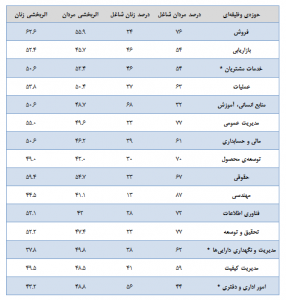
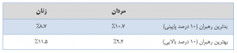

|
|
جنسیت نباید مهم باشد ولی همچنان هست /جک زنگر و جوزف فولکمن
پنج شنبه9 شهریور 1391
ولوم: همه با این موضوع موافقاند که عوامل متعددی روی استخدام فرد مناسب برای یک شغل تأثیرگذارند. چه چیز دقیقا یک مدیر را به ترجیح فرد الف به فرد ب وامیدارد؟ آیا برخی افراد با داشتن آشنایی با این و آن استخدام میشوند؟ بله. آیا برخی افراد بهدلیل تعلقشان به یک جنسیت یا گروه قومیتی خاص ارتقا مییابند یا پست سازمانی جدیدی میگیرند؟ بله. متأسفانه، بیعدالتی همچنان در بازار کار وجود دارد.
همه باور داریم که بهترین و شایستهترین فرد ممکن باید به یک شغل دست یابد و جنسیت، قومیت یا روابط نباید یک عامل تأثیرگذار باشد. اما متأسفانه دادههای موجود در مورد وضعیت بازار کار با این دیدگاه سازگاری ندارند. آنها نشان میدهند که اتفاقا عوامل جانبی تا حدود زیادی روی تصمیم مدیران برای استخدام و ارتقای افراد تأثیرگذارند.
براساس بررسی نتایج پیمایش ما الگوی اصلی موجود در بازار کار غیرقابل انکار است: اغلب رهبران ارشد هنوز مرد هستند و هر چه در ساختار سلسله مراتب سازمانی بالاتر برویم، شکاف جنسیتی عمیقتر میشود. این در حالی است که تحقیقات طولانیمدت ما و بررسی نتایج بیش از ۳۶۰ ارزیابی انجام شده نشان میدهند که در کلیهی سطوح سازمانی از دیدگاه رؤسا، همکاران و زیردستان رهبران زن، آنها در سه چهارم عوامل کلیدی بالابرندهی اثربخشی رهبری بر مردان همردهشان برتری دارند. اما متأسفانه واقعیت این است که وقتی زمان ارتقا یافتن فرا میرسد، بسیاری از این زنان شایسته نادیده گرفته میشوند.
علاوه بر این بررسی دقیقتر دادههای بهدست آمده نشان میدهد که زنان شایسته عموما در چند حوزهی وظیفهی خاص در سازمانها بهکار گمارده میشوند. لازم بهیادآوری نیست که بهصورت کلیشهای فرض میشود زنان در این حوزهها ـ شامل: خدمات مشتریان و منابع انسانی ـ بهترین عملکرد را دارند. حوزههای دیگر چون فروش، عملیات، مهندسی، فناوری اطلاعات، تحقیق و توسعه (R&D) و مدیریت داراییها هنوز کارهایی مردانه محسوب میشوند. آمارهای بهدست آمده از آخرین پیمایش ما روی ۷۸۲۰ رهبر سازمانی در سال ۲۰۱۱، وجود این تبعیض را تأیید میکنند.
با این حال در زمان ارزیابی انتظارهای رهبران ارشد سازمانی نسبت به عملکرد عالی مردان و زنان، ارقام داستان دیگری را میگویند. در جدول ارائه شده در شکل یک، توزیع جنسیتی (براساس درصد) و دیدگاههای رهبران شرکتکننده در نظرسنجی ما در مورد میزان اثربخشی مردان و زنان بهصورت جداگانه برای هر ۱۵ حوزهی اصلی کاری در سازمانها ارائه شدهاند.
شکل یک

* حوزههایی که اثربخشی مردان بیشتر از زنان بوده است.
در تنها سه حوزه از ۱۲ حوزهای که بهصورت سنتی اینگونه فرض میشود مردان در آنها اثربخشی بیشتری دارند، واقعا همینطور است. جالبتر اینکه دو تا از همین سه حوزهی کاری ـ خدمات مشتریان و امور اداری ـ هم حوزههایی هستند که عموما فرض میشود زنان در آنها عملکرد بهتری دارند. همچنین بیشترین شکاف میان اثربخشی زنان و مردان عموما در حوزههای وظیفهای رخ داده است که بهشدت توسط مردان اشغال شدهاند (فروش، مدیریت عمومی، تحقیق و توسعه، فناوری اطلاعات و توسعهی محصول.) این تفاوتها در انتخاب بهترین و بدترین رهبران حتی نمود بیشتری مییابند: زنان در میان بدترین رهبران درصد کمتری را در مقایسه با مردان به خود اختصاص میدهند و در مقابل، درصد بیشتری از بهترین رهبران زن هستند.
شکل دو

مشخصا برخی از این الگوها میتوانند براساس تعداد کاندیداهای در دسترس در درون سازمانها از هر جنس توضیح داده شود (مثلا معمولا مهندسان زن کمتری در سازمانها وجود دارند.) اما این حقیقت هم باید در نظر گرفته شود که امروزه زنان شاغل در موقعیتهای رهبری از جامعهی کاملا برگزیدهای به این نقطه رسیدهاند و برای این منظور هم بهسختی تلاش کردهاند و زحمت کشیدهاند.
منبع: هاروارد بیزنس ریویو